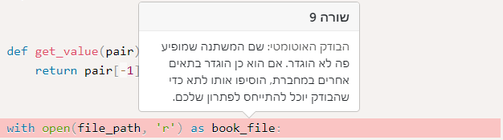
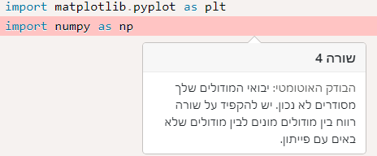

זה אומר שהבודק האוטומטי לא יודע מה למדנו ומה עוד לא למדנו
למעשה, נראה מזה שהבודק האוטומטי משתמש בזה כדי לודא שהתרגיל בוצע נכון

זה אומר שהבודק האוטומטי לא יודע מה למדנו ומה עוד לא למדנו
למעשה, נראה מזה שהבודק האוטומטי משתמש בזה כדי לודא שהתרגיל בוצע נכון
זה אומר שדרך מעולה לבדוק קוד היא עם assert שאנחנו נלמד בהמשך, ומאפשרת לעשות בדיקות אוטומטיות ולכן הגיוני שהבודקים ישתמשו בזה
תודה! למה הכוונה? בכותרת של הפונקציה (מותר לי לכתוב אותה כאן?) כתבתי פרמטר עם הרשימות ופרמטר של תו מפריד עם דיפולט שהוא סטרינג ריק. את הקריאה עצמה לא העליתי.
לפי ההערה, כשבוצעה הקריאה הזו join([1, 2], [8], [9, 5, 6]) מה שהוחזר לא היה [1, 2, '-', 8, '-', 9, 5, 6] כפי שנדרש אלא [1, 2, 8, 9, 5, 6]. נסה לבצע את הקריאה ולראות אם אצלך מוחזר הפלט הנכון
אוי, חשבתי שאם לא סופק תו הדיפולט צריך להיות כלום ולא “-”. תיקנתי עכשיו וזה הסתדר, בפעם הבאה אני אקפיד יותר על קריאת ההוראות, מצטער (ותודה רבה!).
יש פיצ’ר ניסיוני שהכנסנו (יותר נכון @gal432 הכניס) של בדיקות אוטומטיות שמופיעות מתחת לתרגיל ונותנות לכם אינטואיציה לגבי האם התרגיל שלכם מחזיר תשובות נכונות. נקווה שיכנס יותר לשימוש בשבוע הבא.
זה מה שאתם רואים עם ה־assert־ים
תיקנתי את התרגיל. תודה!
נניח והעליתי כמה חלקי תרגיל שבראש כל חלק import, שמן הסתם אמור להיות רק בראש הקוד. ואני מקבלת הערה של הבודק האוטומטי, איך אני מסדרת שלא תהיה הערה חוץ מלמחוק את ההוראה עצמה? תודה
לא בטוחה שהבנתי את השאלה, אבל כל ה-importים אמורים להיות בתחילת הקוד, ממש מתחת ל-upload.
נכון… רק שהעלאתי כמה חלקי קוד שונים שאינם תלויים אחד בשני בעיקרון ושכולם מתחילים מ import… רציתי לדעת אם יש דרך לבטל את ההערה, אבל פשוט השארתי רק אחד בראש הקוד. מניחה שיבינו  תודה
תודה
לשים בתחילת הקוד את כל פקודות ה-import שדרושות כדי שהקוד ירוץ, גם אם הן דרושות רק לפונקציה בתחתית התא
אבל אין כפתור “שלח” הכחול אלא רק “הצצה”. לא ברור איך אני שולחת מחדש 
הי
העלתי רק את החלק השני של פרדוקס יום הולדת כי הוא מכיל את החלק הראשון (בשינוי קל). האם צריך להעלות את שני החלקים?
אם את יכולה להוסיף שורה שקוראת לפונקציה ומחזירה את מה שהתבקשנו בסעיף א אז תוסיפי אותה וזה אמור להיות בסדר (כי זה אומר שסעיף א נמצא שם). אחרת תוסיפי גם את סעיף א
מקווה שזה המקום הנכון להגיב בו…
מנסה להבין למה אני מקבל את ההערה הבאה, בזמן שככה בדיוק למדנו להשתמש, וכשלמעשה באותה שורה להבנתי אני מגדיר את המשתנה, לא משתמש בו.
הושיעו נא 

בהינתן שזה מעט מוזר שזה יהיה על book_file, החשוד העיקרי הוא file_path. מי זה ומאיפה הוא בא?
מדהימה! כנראה נמחק בטעות באיזשהו שלב…
תודה!
אני מקבל הערה מהבודק האוטומטי לגבי הסדר של המודולים האלה, אבל שניהם לא באים עם פייתון (לפחות הם לא מופיעים ברשימה ב https://docs.python.org/). אני מפספס משהו?

תתעלם בhנתיים ספציפית מהשגיאה הזו